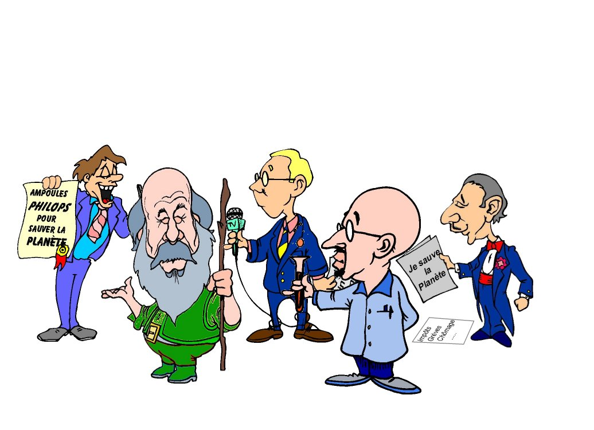

Les politiques ont, quoiqu’on en dise, le souci du bien commun. C’est leur raison d’être, entre autres. Cependant, lequel d’entre nous ne s’est pas dit que ce doit être un métier bien ingrat. Vous imaginez ? prélever des impôts, réduire le chômage, promulguer des lois impopulaires, essayer de ne pas céder aux grèves etc. La galère, quoi. Alors imaginez que se présente enfin une occasion inespérée de redorer son image, d’utiliser des grands mots devant un micro, d’organiser une réunion internationale, bref d’élever le débat. C’est, pour eux une occasion idéale de ressortir du marasme ambiant. En langage militaire cela s’appelle aussi effectuer une manoeuvre de diversion. Mais, qu’importe. Les gogos n’y voient que du feu. Il leur suffit de nous dire qu’ils vont “sauver la planète”. Ce n’est pas rien. Quelle bonne aubaine.
Par exemple, un marronnier environnemental comme le réchauffement climatique anthropogénique leur permet d'instaurer illico de nouveaux impôts. Personne ne peut refuser une nouvelle vignette s'il s'agit de sauver la planète (comme la vignette des vieux du temps du général de Gaulle) (illustration en septembre 2009 : la taxe carbone de Hulot-Rocard)...
De plus, les gouvernants savent très bien que la seule issue réaliste en matière d'indépendance et de production de l'énergie est le nucléaire. Ils ont tout intérêt à souffler sur les braises allumées par les écologistes puis à mettre en construction un nouveau réacteur EPR... qui ne rejette pas de CO2. C'est gagnant-gagnant. Il est d'ailleurs révélateur que la très grande majorité des membres du Conseil Scientifique de l'organisation "Sauvons le Climat" soient issus du CEA, d'AREVA ou d'EDF...Les écologistes pris à leur propre piège, vont faire un peu d'alpinisme symbolique sur les haubans des centrales à charbon et tout le monde se tait. C'était exactement la stratégie employée, en son temps, par Maggie Thatcher.
D’autre part, les politiques disposent de statistiques. A ce sujet, les frères Goncourt disaient que les statistiques sont la première des sciences inexactes. C’est tellement vrai lorsque l’on a intérêt à présenter des résultats qui vous sont politiquement favorables. Il suffit de ne pas préciser les conditions exactes dans lesquelles ont été effectuées les calculs et il est exact que tout détailler rendrait le discours difficile à suivre. Ce n’est donc pas un vrai mensonge même si c’en est un par omission. Un tout petit mensonge, quoi. Et puis, on ne compte plus les courbes de croissance dont on ne montre pas le pied pour amplifier l’apparence de bons résultats etc. On n’y voit que du feu pendant une lecture rapide. Bref, vous le voyez, dans tout cela, la rigueur scientifique et la prudence sont loin d’être prioritaires. Clairement, les politiques ont intérêt à créer ou à participer à la Pensée Unique. Ils y ont d’autant plus intérêt que, s’ils ne le font pas et si les choses venaient à mal tourner, ils seraient plus tard accusés de laxisme. Sachez le, ami(e) lecteur(trice), nos hommes politiques ont une peur bleue de revivre l’affaire du sang contaminé. On peut compter sur eux pour appliquer le Principe de Précaution, récemment inscrit dans la Constitution, à la moindre occasion. D’autant plus qu’ils subissent la pression de l’opinion publique, elle-même pilotée par les médias, qui leur fait craindre le pire pour leur prochaine réélection. Bref, c’est la galère, si on ne suit pas la Pensée Unique, quand on est un homme politique...
Et si on la suit, c’est pain béni.
Si on la provoque...c'est encore mieux : On reçoit le prix Nobel (de la Paix).
Les journalistes -c’est bien connu- veulent des scoops. Des scoops aussi tragiques et retentissants que possible. Annoncer l’apocalypse est une aubaine pour faire la une des journaux. Publier des images de synthèse qui vous font froid dans le dos, leur assure une audience sans égale. Si possible en rajoutant quelques mètres (au lieu de millimètres) au niveau des mers qui devraient nous engloutir ou en en rajoutant sur les déclarations des scientifiques qui, selon eux, s’expriment (parfois) avec trop de prudence. Tous les scientifiques connaissent des dizaines d'histoires sur les exagérations que les journalistes ont fait subir à leurs propos. Vous en voulez un exemple peu connu ? Le voici :
Lors de l'annonce de la découverte du premier laser en 1960, son inventeur, Théodore Maiman, fut interviewé par les journalistes: " Pensez vous, Mr Maiman que le laser puisse être utilisé comme une arme ?" Non, je ne le crois pas, répondit l'inventeur. Le journaliste insista " Mais pensez vous qu'il est impossible que le laser serve un jour comme armement ?". Non. répondit simplement Maiman. Le lendemain, toute la presse titrait en cinq colonnes à la une " Un chercheur de Los Angeles découvre le rayon de la mort". Ce qui était idiot. Le laser rend de grands services à l'humanité sans tuer personne mais les journalistes voulaient vendre du papier, sans chercher plus loin. Un autre article titrait en Juillet 1960 : " Un habitant de Los Angeles surpasse la lumière du soleil : des armes horribles se profilent à l'horizon". C'était totalement faux, bien sûr. Et ce n'est un exemple parmi des milliers d'autres.
D'autre part, (hélas.), les médias s’estiment investis d’une mission essentielle : La PEDAGOGIE. “Ne craignez vous pas de démobiliser ceux qui vont réagir positivement parce qu’ils craignent l’apocalypse ?" nous disent-ils lorsque nous nous inquiétons des exagérations qu’ils font subir à nos explications scientifiques. En bref, beaucoup de nos journalistes pensent qu’il ressort de leur mission d’effrayer le grand public pour le faire réagir dans le bon sens. Ils agissent ainsi exactement comme les prélats du moyen âge qui faisaient sculpter d’horribles monstres représentant les affres de l’enfer, sur les portails des cathédrales, dans le but de susciter la peur chez leurs contemporains et ainsi mieux les maîtriser. Et cet esprit de "responsabilité collective" des journalistes peut aller très loin, jusqu'à la censure pure et simple des "dissidents", aussi qualifiés soient-ils. Par exemple Ross Gelbspan ancien éditeur du Boston Globe a déclaré que "Non seulement les journalistes n'ont pas le devoir de rapporter ce que les scientifiques sceptiques ont à dire à propos du réchauffement climatique, ils ont le devoir de ne pas rapporter ce que ces scientifiques disent..." (source)
Ainsi, en agitant des peurs millénaristes, en négligeant le vocabulaire prudent et mesuré des scientifiques, les médias mettent en doute notre bon sens et notre capacité de jugement. En bref, ils nous prennent pour des imbéciles, pour un troupeau des moutons de Panurge, incapables de tirer les bonnes conclusions à partir de données scientifiques non déformées. Ce faisant, encore, ils orientent gravement le jugement de nos concitoyens et sont ainsi largement responsables de la Pensée Unique. D’ailleurs, c’est en pensant à eux que l’on a fabriqué un affreux néologisme qui sonne très mal aux oreilles des amoureux de la langue française.
On les appelle, entre autres, les “faiseurs d’opinion”. C'est bien le mot qui convient. Du moins, le pensent-ils... en oubliant Internet.
Donc, c’est bien entendu : les chercheurs peuvent se tromper et il est inutile de les vénérer comme des gourous qu’ils ne sont pas, même s’ils sont plus compétents que les autres en matière de sciences. D’ailleurs et de mémoire d’homme, les progrès scientifiques sont toujours nés dans la douleur et dans les polémiques entre savants. Souvenez vous de Galilée qui soutenait, seul contre tous, les thèses de Copernic contre celles d’Aristote et de l’église et qui fut emprisonné pour cela. Et croyez moi, c’est toujours aussi difficile au XXIème siècle, même si l’on ne va pas (encore) en prison.
Ceci étant dit, les chercheurs sont des hommes et des femmes comme les autres. Ils ont soif de notoriété, de succès dans leur travail et de reconnaissance par la société. Ils ont aussi un besoin pressant d’argent et de contrats pour poursuivre leurs recherches, comme tout le monde le sait.
Malheureusement, la médiatisation excessive de certains, la quasi “starisation” d’autres qui annoncent, si possible, des catastrophes aux médias, l’ambiance actuelle qui fait que l’on ne trouve de l’argent que si l'on travaille "pour sauver la planète", font que beaucoup ont oublié les quelques phrases sur la déontologie du chercheur que j’ai rappelées ci-dessus. Certains sont de bonne foi, cependant, même s'ils se trouvent parfois emportés par leurs convictions politiques sur les sujets sociétaux. Mais beaucoup se disent qu’il vaut mieux travailler dans le sens et sur un sujet à la mode que de faire comme Galilée. Vous en voulez un exemple ? Eh bien, essayez de demander aux Instances Européennes un contrat de financement pour essayer de vérifier si la consommation d’énergie fossile a quelque chose à voir avec le réchauffement climatique. Vous n’obtiendrez absolument rien et vous serez sans doute accusé par vos collègues de travailler pour faire la fortune des grands pétroliers comme EXXON. Sans doute y possédez vous des actions. disent-ils. D'autre part, vous éprouverez les plus grandes difficultés à faire publier le résultats de vos travaux dans les revues à comité de lecture si vous vous opposez à la Pensée Unique, ce qui mettra un frein sérieux à votre carrière. Par contre, si vous vous inscrivez dans le flux ambiant qui dit que tout cela est acquis, vous n'aurez aucune difficulté à publier vos résultats, à faire une brillante carrière et votre labo sera couvert de crédits. A titre d'exemple, les fonds fédéraux attribués à la recherche climatologique aux États-Unis atteignent maintenant 1,7 milliard de dollars par an contre quelques centaines de millions voici 15 ans ce qui fait une énorme différence (d'après R. Lindzen). Il en a déjà été de même à l’époque du “trou de l’ozone”. Certains chercheurs impliqués (ou ceux qui voudraient bien l'être) dans ces lucratifs effets de mode ont d'ailleurs trouvé un qualificatif révélateur pour désigner cette manne providentielle qui leur tombe du ciel, au sens propre. Ils appellent cela entre eux " La corne d'abondance". C'est bien trouvé, non ?
Dans cette ambiance délétère, il semble que certains ne perdent pas le nord. C'est ainsi que le CNRS ou plus précisément des personnels responsables de l'Institut Pierre-Simon Laplace de Paris qui fédère la majorité des recherches sur le climat en France, sont partie prenante d'une startup (Climpact) internationale qui, moyennant finances, explique aux industriels prévoyants comment faire face aux changements climatiques à venir (selon eux). Je ne suis pas certain que les quelques principes de déontologie sur " l'indépendance des chercheurs" que j'ai rappelés ci-dessus, s'y retrouvent. En effet, se faire de l'argent en conseillant des mesures pour contrer une catastrophe que l'on a soi-même annoncée, mais qui n'est pas absolument certaine... Bon. il faut qu'ils soient vraiment très sûrs d'eux. J'espère, pour eux, qu'ils ont raison sur les prédictions...mais, hélas, j'ai des doutes très sérieux.
De manière générale, je suis très inquiet (comme beaucoup d’autres) de la tendance actuelle qui vise à ne financer les laboratoires que sur des contrats prédéfinis (sur des sujets choisis et sélectionnés par qui ?).
C’en est bien fini de l’indispensable indépendance intellectuelle des chercheurs qui ne peuvent plus qu’opiner du bonnet et ne pas déplaire aux “faiseurs d’opinion” ni à leurs collègues chercheurs déjà engagés et aux fournisseurs de crédits (Allez voir une illustration amusante de cette "nouvelle méthode" par un jeune chercheur américain, ici.), généralement totalement incompétents en matière scientifique. C'en est fini aussi pour les crédits des chercheurs qui travaillent en amont, comme par exemple en physique fondamentale, en chimie de base, en mathématiques etc. C'est pourtant grâce à eux que l'on a découverts les lasers, la chromatographie, l'analyse quantitative, les puces à ADN, la magnéto-résistance géante chère à notre récent lauréat du prix Nobel Albert Fert et toutes ces superbes machines qui servent maintenant à ceux qui veulent "sauver la planète". C’est un grave problème pour le futur de notre société. Pour vous convaincre de ces dérives catastrophiques, allez donc voir ici, ce petit diagramme sur la méthode scientifique en vigueur, pondu par un thésard américain : ça fait froid dans le dos.
Enfin, il ne faut pas se cacher que certains, dans les sphères scientifiques, entretiennent des idées plutôt "progressistes"comme on dit pudiquement. Ce n'est évidemment pas critiquable, en soi.
Par contre, cela devient franchement inquiétant pour ne pas dire plus, lorsque certains de ceux-ci, utilisent, sans vergogne, l'image de probité et d'impartialité de la science, pour faire avancer leur projet politique.
Certains de ces scientifiques, plus ou moins "révolutionnaires", ne s'en cachent d'ailleurs absolument pas. Voici, pris parmi d'autres, deux témoignages très éclairants à ce sujet :
"C'est la première fois dans l'histoire de l'humanité qu'une nuisance ( NDLR : Le réchauffement climatique) possède ce caractère universel.
Qui pourra imposer à un Etat puissant (Etats-Unis, Chine ou même France) de limiter ses émissions s'il
ne le désire pas ? Il n'y a pas, actuellement, d'instance ou de mécanisme de décision mondiale ;
l'humanité sera-t-elle capable de s'en doter ?"
En clair, Jacques Treiner appelle de ses voeux la mise en place d'un "Gouvernement Mondial".
Bigre. Rien que ça. Et de quelle coloration serait ce "Gouvernement Mondial" ? Je n'ose l'imaginer...
“ Le seul moyen pour changer notre société, c'est de fiche la frousse aux gens en les menaçant d'une possible catastrophe, et donc il est tout à fait légitime et il est même nécessaire que les scientifiques exagèrent.
Le professeur Botkin poursuit : " Les loups trompent leurs proies, n'est ce pas, me confia l'un d'entre eux. "
NDLR : Hum. Les "proies" c'est vous. Je ne sais pas pour vous; mais moi... Brrrr. ça me fait froid dans le dos que des scientifiques raisonnent comme cela : C'est très inquiétant.
Les écologistes, indépendants ou verts, poursuivent un but avoué et somme toute louable, s’il était défendu avec un peu moins de convictions toutes faites et un minimum d'honnêteté scientifique :
Sauver la planète.
Lorsqu’on poursuit un objectif d’une telle envergure, il est clair que la déontologie et toutes les rigueurs scientifiques du monde s’estompent sans regret. Que les chiffres ou les statistiques publiés soient erronés, que les soi-disant experts s’appuient sur des informations incertaines ou biaisées, tout cela n’a pas beaucoup d’importance face aux enjeux auxquels se pensent confrontés nos écologistes qui sont le plus souvent tout sauf des scientifiques rigoureux. Certains d’entre ceux qui s’agitent devant "nos étranges lucarnes" (i.e. la télé, selon le Canard enchaîné) me font irrésistiblement penser à ces prophètes illuminés qui annoncent perpétuellement la fin du monde, tant leurs discours sont outranciers et dénués de fondement scientifique. Mais, ne vous y trompez pas, sous une apparence sympathique, les écologistes ont une stratégie redoutable qui fonctionne très bien : Ils créent la panique et entretiennent des peurs millénaristes dans l’opinion publique à l’aide de films, d’images et de chiffres soigneusement selectionnés, dans un but qui, selon eux, transcendent tous les autres. Et je ne parle pas de ceux qui tirent directement bénéfice des produits dérivés en profitant de la crédulité de leurs concitoyens et de la peur qu'ils ont eux-mêmes inspirée.
Certains écologistes (mais pas tous, heureusement), sous une apparence bonhomme et sympathique, sont mus par une véritable stratégie qui est bien loin de la Science, disais-je. Vous ne me croyez pas ? Eh bien, voici une phrase qui sort du fond du coeur de l'ancienne ministre de l'environnement Canadien (Christine Stewart) à laquelle on expliquait que les données climatiques avaient été falsifiées et détournées et que rien n'était prouvé :
"No matter if the science is all phony, there are collateral environmental benefits...climate change provides the greatest chance to bring about justice and equality in the world. It's a great way to redistribute wealth".
Autrement dit, en français, "Peu importe que la science soit complètement bidon, il y a des bénéfices collatéraux pour l'environnement... Le changement climatique nous donne la meilleure chance d'apporter la justice et l'égalité dans le monde. C'est un excellent moyen pour redistribuer les richesses "
En 2010, à l'approche du Sommet de Cancun ( le successeur du sommet de Copenhaugue), une sommité du GIEC, Ottmar Edenhofer, a repris et complété les idées de Christine Stewart :
"But one must say clearly that we redistribute de facto the world's wealth by climate policy. Obviously, the owners of coal and oil will not be enthusiastic about this. One has to free oneself from the illusion that international climate policy is environmental policy. This has almost nothing to do with environmental policy anymore, with problems such as deforestation or the ozone hole"
en français : " Mais on doit dire clairement que nous redistribuons, de facto, les richesses du Monde au moyen de la politique du climat. Evidemment, les propriétaires de charbon ou de pétrole ne seront pas enthousiasmés par cette idée. On doit se libérer de l'illusion que la politique internationale pour le climat est une politique environnementale. Ceci n'a presque plus rien à voir avec une politique pour l'environnement, avec des problèmes comme la déforestation ou le trou de la couche d'ozone."
En effet, c'est parfaitement clair.
Paul Watson, le cofondateur de Greenpeace ne s'embarrasse pas vraiment de déontologie, lui non plus. Il a déclaré que :
"It doesn't matter what is true. It only matters what people believe is true". Soit " Ce qui est la vérité n'a pas d'importance. Seul compte ce que les gens pensent être la vérité". (Magazine Forbes, Nov 1991)
Emma Brindal est une responsable de l'organisation les "Amis de la Terre". Elle est tout à fait sur la même ligne que Christine Stewart.
Elle n'a pas dissimulé son objectif final dans l'ambiance surchauffée qui régnait lors de la dernière réunion de Bali, en décembre 2007. Elle a déclaré que : “A climate change response must have at its heart a redistribution of wealth and resources,”
soit "La redistribution des richesses et des ressources doit être au coeur de la réponse au changement climatique".
Une des membres de l'organisation éco-extrémiste (deep-ecology en anglais) "Earth First" soit "Terre d'abord", Judi Bari, n'utilise pas la langue de bois : (source)
"I think that if we don't overthrow capitalism, we don't have a chance to save the world ecologically"
Soit "Je pense que si nous ne renversons pas le capitalisme nous n'avons aucune chance de sauver le monde du point de vue écologique".
Ces écologistes ont, au moins, le mérite de la franchise. Le but qu'elles poursuivent n'a rien à voir avec le climat ou la Science : Elles ne désirent que changer la société...Le climat n'est qu'un prétexte.
Dans une perspective toute aussi inquiétante, voici une affirmation de Stephen Schneider (National Center for Atmospheric Research Boulder, Colorado) dans un article publié en 1989 dans APS News (page 5) :
" Ainsi devons nous présenter des scénarios effrayants, proférer des affirmations simplistes et catastrophiques sans prêter attention aux doutes que nous pourrions avoir. Cette "contrainte éthique à deux versants" à laquelle nous sommes fréquemment confrontés, ne peut pas être résolue par une quelconque formule. Chacun d'entre nous doit décider quel est le bon équilibre à trouver entre l'efficacité et l'honnêteté. J'espère que ce sera les deux."
Stephen Schneider était, avec d'autres collègues de Stanford (comme Paul Ehrlich) un des admirateurs de Mary Mead (à l'époque présidente l'AAAS) que l'on peut considérer à juste titre comme la mère des théories alarmistes en matière de climat. Voici comment Mary Mead, qui était une biologiste, programmait l'avenir, dès 1975, lors d'une conférence (Research Triangle Park, North Carolina, 1975) rassemblant les futurs piliers du "réchauffement climatique" : (source)
J'ai demandé à un groupe de scientifiques spécialistes de l'atmosphère de se réunir avec nous afin de trouver comment les très réelles menaces contre l'humanité et la vie sur cette planète peuvent être mises en avant, de manière crédible et persuasive, avant que la société des nations actuelle commence à promulguer des lois sur l'atmosphère..."
Toujours sur les tenants et aboutissants de la construction de cette affaire de réchauffement climatique par les écologistes et autres mouvements activistes, je vous conseille la lecture de l'article passionnant (pdf) rédigé par le Professeur Georges Rossi (qui est aussi l'auteur de "l'Ingérence écologique, Environnement et développement rural du Nord au Sud" - Editions CNRS 2000).
Vous n'êtes toujours par convaincu sur la philosophie profonde des écologistes ? Voici une citation de Maurice Strong, le créateur du mouvement "New age" qui est à l'origine de la mouvance "verte" américaine. Il était encore, jusqu'en 2005, le conseiller spécial de Kofi Annan, lui-même secrétaire général de l'ONU, pour les questions environnementales (avant de s'expatrier en Chine). Strong a mis sur pied et dirigé la mise en place en place des protocoles de Rio de Janeiro et de Kyoto. Strong a dit en public :
"We may get to the point where the only way of saving the world will be for industrial civilization to collapse"
En français : "Il est possible que nous en arrivions au point où, pour sauver le monde, la solution sera l'effondrement de la civilisation industrielle".
Poursuivant son raisonnement, Maurice Strong donne des recettes pour parvenir à ces fins. Il cite, en particulier "quest of poverty...reduced resource consumption... and set levels of mortality". Soit, en français : " recherche de la pauvreté...réduire la consommation des ressources...et installer des normes pour la mortalité".
NDLR : Cela rappelle une phrase de R. Mac Namara en 1980, exactement dans le même esprit Malthusien "Ou l'on fait baisser rapidement les chiffres actuels de la natalité ou l'on fait augmenter les chiffres de la mortalité"... NDLR : Brr...
A noter que Maurice Strong a été lourdement impliqué dans les scandale de l'ONU sur les détournements de fonds "pétrole contre nourriture" destinés à l'Irak. Poursuivi par la justice, il serait actuellement en Chine (source et ici, et encore ici).
" We have got to ride the global warming issue. Even if the theory of global warming is wrong, we will be doing the right thing, in terms of economic policy and environmental policy.
En français " Nous devons enfourcher le cheval de bataille du réchauffement climatique. Même si la théorie du réchauffement climatique est fausse, nous ferons ce qui est bon aussi bien pour l'économie que pour la politique environnementale"
"When the chips are down I think democracy is a less important goal than is the protection of the planet from the death of life, the end of life on it," he says. "This has got to be imposed on people whether they like it or not."
Soit "Quand les choses vont très mal, Je pense que la démocratie est un objectif moins important que la protection de la planète contre la mort, la fin de la vie" Il dit "Ceci doit être imposé (NDLR : Les restrictions de l'usage du carbone) au peuple que cela lui plaise ou non."
" Emphasis on extreme scenarios may have been appropriate at one time, when the public and decision-makers were relatively unaware of the global warming issue, and energy sources..."
En français : " L'accent porté sur les scénariis extrêmes ( NDLR : du réchauffement climatique) a sans doute été utile à une époque où le public
était ignorant de l'enjeu du réchauffement global et des sources d'énergie..."
Bel aveu de désinformation délibérée du grand public et des politiques, de la part d'un scientifique. Le même a affirmé à Columbia University en Juillet 2006 que "Tous les cris de ces scientifiques sceptiques ne seront pas étouffés tant qu'ils ne seront pas morts".
Sans commentaires...

"the task of climate change agencies is not to persuade by rational argument but in effect to develop and nurture a new “common sense"".
Autrement dit, en français "Le travail des agences du changement climatique ne doit pas être de persuader avec des arguments rationnels mais plutôt de développer et encourager un nouveau "sens commun".NDLR :cad, développer et encourager une nouvelle Pensée Unique.
N'oublions pas le célèbre Club de Rome qui demeure la source d'inspiration privilégiée de la plupart des "écologistes" de la deep ecology. Parmi les français adeptes des rapports du Club de Rome, figure notamment J-M Jancovici, le conseiller de Nicolas Hulot et l'expert en calcul "d'empreintes carbone". Le Monde du jeudi 25 octobre 2007 confesse, dans une page dédiée, qu'un livre de chevet de Jancovici est le rapport du Club de Rome publié en 1972.
Voici quelques citations tirées des publications du Club de Rome. Vous en trouverez d'autres, du même tonneau, dans le Financial Times. De même, L'Agenda 21 de l'ONU reprend un grand nombre de ces idées.
" En recherchant un nouvel ennemi qui pouvait nous unir, nous en sommes arrivés à l'idée que la pollution, la menace du réchauffement climatique, la raréfaction de l'eau douce, les famines et les choses de ce genre, pourraient faire l'affaire... Tous ces dangers résultent de l'intervention humaine et ce n'est qu'en changeant d'attitude et de comportement qu'on peut en venir à bout. Dès lors, le véritable ennemi c'est l'humanité elle-même"
Plus loin dans le même livre : "La démocratie n'est pas la panacée. Elle ne peut pas tout organiser et elle est inconsciente de ses propres limites. On doit voir les choses en face. Aussi sacrilège que cela puisse paraître, la démocratie n'est plus adaptée pour résoudre les taches qui nous attendent. La complexité et l'aspect technique de beaucoup de problèmes actuels ne permettent pas à des élus de prendre des décisions compétentes en temps voulu." (Tout cela qui se passe de commentaires, se trouve dans "La Première Révolution Globale, pp.104-105 et suivantes, publié par le Club de Rome,").
Ou encore cette citation tirée d'une autre publication du Club de Rome '"Mankind at the turning point": " La terre a le cancer et ce cancer, c'est l'homme."
Vous trouverez toute une collection de citations, dans la même veine, dans cette page.
Par exemple celle de notre célèbre Jacques Y. Cousteau qui a eu le grand mérite de faire connaître la mer à ses contemporains mais qui était aussi un écologiste Malthusien extrémiste. Il a affirmé que " Pour stabiliser la population mondiale nous devons éliminer 350.000 personnes par jour.C'est horrible à dire mais c'est aussi horrible de ne pas le dire" (Courrier de l'Unesco).
Ou encore, ces déclarations de leaders de "Terre d'abord.": de Christopher Manes "Il est possible que l'extinction de l'espèce humaine ne soit pas inévitable mais aussi une bonne chose".
De John Davis, éditeur du journal "Terre d'abord": "J'imagine que l'éradication de la variole a été une mauvaise chose. Elle jouait un rôle important dans l'équilibre de l'écosystème".
Le Prince Philip d'angleterre, Président du WWF, a des idées si arrêtées sur la présence de l'homme sur cette planète qu'il a déclaré : Si j'étais réincarné, je souhaiterais renaître sur terre sous forme de virus mortel afin de faire baisser le niveau de la population mondiale..." Ref : Prince Phillip, Duke of Edinburgh, in 'Are You Ready For Our New Age Future?' Insiders Report, American Policy Center, December 1995.
etc...
Cela peut aller très, très loin... jusqu'à vouloir changer la Bible. Ainsi littéralement transportés par leur foi (au sens fort) pour la nature et pour notre terre, certains écologistes de la même tendance n'hésitent pas à remettre en question les fondements même des théologies traditionnelles afin qu'elles soient corrigées et ne rentrent pas en conflit avec "la religion de la Planète".
C'est ainsi que dans les colonnes de Science (vol 155, page 1203) en 1967, on trouve sous la plume de L. White Jr. cette phrase qui ne manque pas d'aplomb : "We shall continue to have a worsening ecologic crisis until we reject the Christian axiom that nature has no reason for existence save to serve man". En français : "Nous continuerons à subir une aggravation de la crise écologique jusqu'à ce que nous rejetions l'axiome Chrétien selon lequel la seule raison d'être de la nature, c'est de servir l'homme". ( NDLR : Je me demande encore comment une telle phrase a pû passer le filtre des fameux "referees"de la revue Science qui, décidéement n'est plus ce qu'elle était.) A noter que L. White Jr. ignorait visiblement que c'est la Genèse, dans la Bible, qui précise que Dieu a créé la terre pour y installer l'Homme. C'est une notion du Livre qui est loin d'être propre aux seuls chrétiens comme le croit White. White n'a pas craint d'en rajouter sur ce sujet en diverses occasions. Par exemple, dans sa célèbre conférence sur "les racines historiques de notre crise écologique", donnée le 26 décembre 1966 à Washington, il a déclaré devant l'Association américaine pour l'avancement des sciences:(AAAS) que :
«Davantage de science et davantage de technique ne viendront pas à bout de l'actuelle crise écologique tant que nous n'aurons pas trouvé une nouvelle religion ou repensé l'ancienne.
Notre science actuelle et notre technologie actuelle sont toutes deux si imprégnées de l'arrogance chrétienne dominante
envers la nature qu'on ne peut attendre d'elles seules aucune solution pour notre crise écologique. Dès lors que les racines de notre malaise sont en partie religieuses, le remède, lui aussi, doit être essentiellement religieux, que nous le nommions ainsi ou non."
Connaissant l'AAAS qui a eu pour Président Mary Mead et John Holdren (le conseiller scientifique d'Obama, célèbre pour ses déclarations néo-mathusiennes avec Paul Ehrlich), je pense que cela n'a pas dû susciter la moindre interrogation de la part des auditeurs. (Merci au lecteur attentif qui m'a signalé cette citation que l'on trouve ici)
Mais cela ne s'arrête pas là : Il y a aussi ( texte extrait de la revue Science d'avril 2007, page 540 ) des efforts menés par des évangélistes américains pour "frame the problem of climate change as a matter of religious morality". Autrement dit, approximativement, en français, des efforts pour " inscrire la question du changement climatique dans le cadre de la morale religieuse "
C'est encore pire que la pensée unique.
Pourtant, du côté des catholiques, le vent ne souffle pas du tout dans la même direction que celle des évangélistes américains. C'est le moins que l'on puisse dire. Ainsi le Pape a publié un texte (voir ici) en décembre 2007, au moment où les écologistes étaient rassemblés à Bali, recommandant la plus grande prudence, sinon le scepticisme, sur les conclusions à tirer du fameux réchauffement climatique. Il rappelle le prééminence de l'humain sur toute autre vie sur la planète... ce qui est strictement le contraire de ce qui précède.
_____________________________________________________________________________________________________________________
Pour un amoureux de la liberté de penser, ça fait froid dans le dos, non ? Pour tous ces écologistes radicaux, la fin justife les moyens.
Voilà, au moins, qui a le mérite d'être clair. Ces écologistes militants qui occupent des postes à haute responsabilité sont convaincus que
Comme vous le voyez, on est très mal parti pour des questions qui devraient rester sur le plan de la discussion scientifique.
Bref, toutes ces citations assez récentes, montrent bien quel est le but profond de l'écologie radicale : Imposer sa vision politique du monde voire installer une sorte de nouvelle religion en utilisant les malheurs (supposés) de la Planète. Autrefois, on utilisait la peur de l'enfer, maintenant, c'est la peur de la planète. Bien joué. surtout que les écologistes sont bien aidés par les médias, toujours à l’affut, qui invitent nos prédicateurs et répercutent "l'information”, même bidon, sans enquêter le moins du monde. Surtout, ils prennent soin de ne jamais donner le point de vue adverse, ou alors, en le ponctuant du fameux “Mais ne craignez vous pas de démobiliser...?”. Bref, les médias amplifient la panique. Les politiques bombent le torse : "Ne craignez rien, je suis un responsable, je m’en occupe." Le tour est joué. Tout le monde est content : on vous a innoculé la Pensée Unique.
D'autre part et dans le même ordre d'idées, j’ai personnellement assisté à plusieurs débats, menés par des journalistes de télévision, entre des écologistes et des scientifiques de mes collègues et amis. En général, le scientifique sérieux (qui ne veut rien affirmer qui ne soit avéré parce qu'il sait que la science apporte souvent des démentis), ne peut suivre le train d’enfer que lui mènent les journalistes et les écologistes aux idées préconçues. Après de gros efforts de pédagogie déployés par mon (ma) collègue pour expliquer qu’on ne peut certes pas affirmer que... parce que plusieurs paramètres très importants restent encore inconnus, etc., le “débat“se termine généralement par un tonitruant “Vous voyez bien qu’il faut faire attention” repris en coeur par les journalistes et les écologistes. Le scientifique, lui ou elle, se contente d’opiner, en se disant “Bon, ils n’ont rien compris à ce que j’ai expliqué mais après tout, ça ne peut pas faire de mal, de faire attention “. Le télespectateur, à moitié endormi, n’y voit que du feu :
C’est aussi comme cela que l’on fait naître et que l’on entretient la Pensée Unique.
Si vous voulez en savoir plus sur cette question très actuelle, voici la référence d'une enquête très sérieuse publiée en 2000 aux éditions du CNRS. Il s'agit d'un livre « L'ingérence écologique. Environnement et développement rural du Nord au Sud » C'est l'oeuvre du géographe Georges Rossi. Enseignant-chercheur à l'université Bordeaux-III dans l'unité mixte Regards (CNRS-IRD). Il y analyse, en particulier, les mécanismes qui ont fait d'une hypothèse, mobilisatrice et formidablement féconde pour les sciences de la physique de l'atmosphère et du climat, un dogme de l'écologie politique dont le scénario catastrophe est devenu fonds de commerce.
Mettre en place un comité d’experts censés faire la lumière sur tel ou tel sujet épineux constitue la réponse favorite de nos politiques lorsqu’une question à base scientifique se présente. Cela donne, en apparence, un fondement indiscutable aux décisions qui seront prises par la suite.Cependant, il faut savoir que, le plus souvent, la partie est jouée avant d’avoir commencé. Le titre du comité d’experts dit tout. Par exemple, il ne faut pas attendre d’un groupe nouvellement formé sous l’appellation , “Groupe Intergouvernemental pour l’étude du Climat- GIEC ” (en anglais,: IPCC signifie International Panel on Climate Change ), quelles que soient les personnalités éminentes qui y participent, qu’il conclue qu’il n’y a pas de changement climatique et qu’il ne trouve rien. Sinon, finie la raison d’être de ce célèbre panel et les avantages et honneurs qui vont avec.
Mais dans le cas du GIEC, les attributions sont encore plus claires. A ce propos, voici le paragraphe introductif des statuts officiels du GIEC.
Il en définit la mission :
"Le rôle du GIEC (IPCC) est d'évaluer, sur des bases scientifiques, techniques et socio-économiques, les informations relatives à la compréhension des bases scientifiques du risque résultant du changement climatique anthropique, de ses impacts potentiels et des options (NDLR: utiles) pour l'adaptation ou l'atténuation".
Dès lors, il ne faut s'étonner que le GIEC s'efforce, à tout prix, quelles que soient les difficultés, de démontrer l'importance de l'action humaine sur le climat en néglligeant toutes les causes naturelles. Ce faisant, il ne fait rien d'autre que de remplir la mission qui lui a été attribuée.
Ce vice de construction est malheureusement des plus fréquents et résulte du processus suivant : Un groupe de pression, faisant généralement partie d’une de ces myriades d’associations qui militent pour les causes les plus diverses (et parfois cocasses), tire la sonnette d’alarme en dénonçant un grave risque sociétal. S’il parvient à se faire entendre des médias puis de la sphère politique (dans cet ordre), le processus est engagé. Les politiques, revivant par la pensée le spectre de l’affaire du sang contaminé (en france), décident de faire quelque chose pour ne pas être taxés de laxisme et craignent-ils, peut-être plus tard, mis en examen. Ils décident donc de créer une “Commission d’Experts”. Nos hommes (et femmes) politiques qui ont presque tous fait Science Po et l’ENA et qui ignorent, pour la plupart, tout de la richesse scientifique de notre pays, choisissent, bien sûr, comme président de cette commission la personne qui a tiré la sonnette d’alarme. Cette dernière, bien entendu, nomme elle-même les “experts” pour cette question parmi les sympathisants de son association. La boucle est bouclée et les conclusions que tireront ce panel (comité) iront, bien évidemment, dans le sens de la sonnette d’alarme. Le gouvernement n’a plus qu’à se conformer aux exigences du Comité et les journalistes qu’à battre les tambour. Ainsi, même si vous êtes, comme moi, favorable à la limitation du tabac dans les lieux publics, n’avez vous pas été surpris de constater que le président de la dernière commission chargée “d’auditer” sur la question des fumeurs dans les endroits publics, était celui-là même qui avait affirmé, haut et fort, qu’il était partisan de l’interdiction totale du tabac ? Dès lors, le résultat était connu d’avance, comme toujours.
A tout seigneur, tout honneur. Il me faut dire encore quelques mots sur une création assez récente, celle des comités d'experts de l'ONU.
Il semble que les défauts inhérents aux comités d'experts (ou des panels comme disent les américains) s'y trouvent décuplés dès lors qu'il s'agit de traiter de questions sociétales qui impliquent la planète. Ces questions remontent tout naturellement à l'Organisation des Nations Unies, fort utile par ailleurs.
Malheureusement la science et la politique ne font jamais bon ménage comme vous le verrez à de multiples reprises dans ce site WEB et les comités de l'ONU n'échappent pas à la règle, hélas, bien au contraire. La création du Groupe Intergouvernemental du Changement Climatique (IPCC ou GIEC en français) voulue par les Américains il y a quelques années (mais qui n'adhèrent plus à leurs conclusions politiques) et dont on a lu le texte de la mission plus haut, en est un exemple très éclairant et, malheureusement, totalement caricatural.
Voici donc un comité qui collationne les travaux d'environ 2000 scientifiques de tous les pays développés (cad scientifiques) chargés d'étudier les causes, les conséquences de possibles et les remèdes aux changements climatiques et de communiquer les résultats aux politiques. Si je suis persuadé que les scientifiques de ce comité font honnêtement leur travail, je suis malheureusement obligé de constater que :
Autrement dit, et c'est un des plus graves problèmes posés par les comités d'experts que le (dis)fonctionnement du GIEC a bien mis en lumière, les rapports terminaux qui sont chargés de l'indispensable synthèse ont manifestement des objectifs politiques sur lesquels je ne m'étendrai pas mais que l'on peut facilement imaginer quand on pense aux conséquences que peuvent avoir ces rapports. Ils détournent le plus souvent la pensée des scientifiques qui y ont participé. Tout simplement parce que leurs objectifs sont fondamentalement divergents. Pour s'en convaincre, il suffit d'écouter les témoignages de quelques uns de ceux qui ont participé à ce fameux comité d'experts, tel Paul Reiter, qui s'exprime ici.
 Le moins que l'on puisse dire c'est que les dirigeants de ce célèbre comité d'experts ont des idées bien arrêtées. Ainsi, le premier Président du GIEC, Sir John Houghton, a donné le ton des prévisions de cet organisme de l'ONU, dès le début :
Le moins que l'on puisse dire c'est que les dirigeants de ce célèbre comité d'experts ont des idées bien arrêtées. Ainsi, le premier Président du GIEC, Sir John Houghton, a donné le ton des prévisions de cet organisme de l'ONU, dès le début :
"Unless we announce disasters, no one will listen"
C'est à dire : "Si nous n'annonçons pas des catastrophes, personnes ne nous écoutera."
Addendum (
18 février 2010) : Sir John Houghton s'est plaint récemment que cette déclaration lui avait été atttribuée à tort et "qu'il n'aurait jamais dit cela ". Il est vrai que l'on ne parvient pas à remonter à la source certifiée de cette déclaration. Par contre, il a effectivement déclaré, lors d'un Interview au Sunday Telegraph du 10 sept 1995 "Me and My God" "Sir John Hougton Talks to Frances Welsh " cette phrase (entre autres) :
"If we want a good environmental policy in the future, we'll have to have a disaster." Soit :
"Si nous voulons une bonne politique environnementale dans le futur, il nous faudra un désastre". Voici la source (scannée)
La phrase est certes différente mais l'idée reste la même.
Ci-dessus, à droite, Sir John Hougton, ex-président du GIEC, commentant la fameuse courbe en crosse de hockey ( discréditée) de Michael Mann et al (1998) ( un bon article ici)
Le dernier président du même GIEC, R. K. Pachauri a qualifié une théorie alternative (et qui "tient parfaitement la route" selon de nombreux scientifiques, c'est celle qui est basée sur l'analyse des éruptions solaires) au réchauffement climatique par l'effet de serre du CO2 généré par les hommes, en ces termes :
"Cette théorie est naïve et irresponsable".
NDLR : En tant que scientifique, je n'avais encore jamais vu qualifier ainsi une théorie. On peut la juger exacte ou fausse, on peut lui trouver des lacunes, des approximations, des oublis etc. Mais qu'une théorie soit qualifiée d"irresponsable" dépasse l'entendement. Pour la recherche, l'essentiel est la vérité scientifique. Cette vérité ne peut, en aucun cas, être "irresponsable". La vérité scientifique, c'est la Nature qui l'a fabriquée. A nous de la trouver. A nous de vous en informer et au public et aux politiques de prendre les décisions en conséquence.
Le GIEC (IPCC) est une sous branche du "UN Environmental Program" (UNEP, le Programme pour l'Environnement de l'ONU). Ce vaste organisme international qui chapaute le GIEC, s'est ouvertement orienté vers les thèses les plus intégristes de l'écologie planétaire. On comprendrait qu'il est de son devoir de veiller à l'intégrité du globe et de lutter contre toutes les formes de pollution. Néanmoins, et toutes proportions gardées, certaines de ses démarches se rapprochent beaucoup d'une sorte de religion de la planète.
Si vous ne me croyez pas, allez visiter cette page intitulée "United Nations Environmental Sabbath Service", promu par l'UNEP dirigé par Maurice Strong cité plus haut. Voici l'entête de la page concernée : ______________________________________________________________________________________________________________
"The United Nations Environmental Sabbath Service
From “Only One Earth,” a United Nations Environment Programme publication for “Environmental Sabbath/Earth Rest Day,” June 1990; UN Environment Programme, DC2-803 United Nations, New York, NY 10017. "
_______________________________________________________________________________________________________
Vous y trouverez une publication de cet organisme de l'ONU qui appelle à la célébration d'un jour de "Sabbat" (ou de réflexion) sur notre comportement par rapport à notre terre ce qui, après tout, n'est pas critiquable. Mais ce document est, en fait, une liste de prières que l'on doit réciter ce jour là. Le texte est absolument édifiant. Voici le début de la première prière. Les suivantes sont du même tonneau et se terminent par un Alléluia à la planète suivant le schéma très classique des grandes religions
A Prayer of Sorrow
Reader: We have forgotten who we are.
We have forgotten who we are
We have alienated ourselves from the unfolding of the cosmos
We have become estranged from the movements of the earth
We have turned our backs on the cycles of life.En français : Acte de contrition
Nous avons oubliés qui nous sommes
Nous nous sommes éloignés du déploiement du cosmos
Nous nous sommes séparés des mouvements de la terre
Nous avons tournés le dos aux cycles de la vie.
Suivent une "acte de rémission " puis une "prière de gratitude" dont les textes laissent rêveurs. Il ne s'agit rien moins que d'une foi religieuse... Dans ces conditions, on se demande comment, le GIEC (IPCC), qui dépend directement d'un organisme qui affiche de telles convictions, peut être qualifié d'organisme "objectif et scientifiquement indépendant".
_____________________________________________________________________________________________________________________
Bref, et de manière générale, le problème des comités d’experts c’est d’abord qu’ils n’en sont pas toujours. Ensuite, qu’ils sont souvent mûs par une conviction déjà acquise ( pour ne pas dire d'un intégrisme) et que, surtout, ils n’ont le plus souvent aucune qualification pour porter un avis indépendant. Ce qui devrait pourtant être la règle. Cependant il faut être honnête et reconnaître qu’un certain nombre de laboratoires ou d’officines, constitués de scientifiques compétents, sont parfois appelés à la rescousse. Malheureusement, c’est alors que l’on retombe dans les travers du milieu scientifique que je décris ci-dessus : Les scientifiques impliqués n'ont pas intérêt à regimber même si leurs observations sont détournées dans les rapports finaux. Ils ne vont quand même pas tuer la poule aux oeufs d'or. La survie et les crédits de leur laboratoire sont en jeu : La boucle est bouclée. La Pensée Unique est dès lors incontournable.
Je reste béat d’admiration devant le temps de réaction hyper-rapide et l’efficacité avec laquelle nos publicitaires (qui sont très bons, au demeurant), sautent à pieds joints dans le courant de la Pensée Unique. A partir du moment ou les médias et les politiques semblent adhérer à une idée ambiante, se déclenchent immédiatement des campagnes de promotions de produits destinés à améliorer la situation. Ils contribuent ainsi, très insidieusement, à créer et entretenir la Pensée Unique. On ne se méfie pas de la pub.
L’exemple du réchauffement climatique est époustouflant. C’est ainsi que l’on a pu voir, entre autres, une publicité de Philips pour les lampes à faible consommation s’étaler devant un fond d’écran montrant (j'espère que c'était un montage.) un petit garçon désolé de constater que des icebergs fondent dans la périphérie de l'Arctique (mais on ne montre pas l'augmentation de la glaciation à l'intérieur des terres.). Les promoteurs d’économie d’énergie, les fabriquants d’éoliennes, de panneaux solaires, de systèmes de chauffage et jusqu’à ceux de lessives (.) s’en donnent à coeur joie en s’appuyant sur le même sujet dans un but purement commercial, évidemment. On vous appelle au téléphone pour vous proposer d'installer des double-vitrages, des joints de calfeutrement etc. Toutes choses fort utiles d'ailleurs que je vous recommande vivement, mais qui montrent à quel point la Pensée Unique profite à certains. Jusqu’à AREVA (l’industrie maîtresse en matière de nucléaire en france) qui en profite pour vous rappeler que l’énergie nucléaire, elle, ne rejette pas de CO2 dans l’atmosphère. Les écologistes qui voient leur argumentation de base, patiemment mise en place depuis plusieurs années, ainsi retournée contre eux, doivent en rougir de colère. Et, à mon avis, ce faisant, ils ont engagé un processus dangereux (voir les remèdes).
Du coté des industriels et contrairement à ce que l'on peut penser au premier abord, beaucoup se réjouissent de trouver enfin l'opportunité de lancer de nouveaux produits afin de réinsuffler un peu d'air frais dans une machine quelque peu essouflée, tout en faisant monter les prix de vente... Ainsi nos amis étrangers ont déjà développé les voitures hybrides qui devraient sérieusement réduire notre consommation d'énergie fossile pour lutter contre l'effet de serre. C'est le cas de Toyota, Honda, General Motors, Ford et Porsche qui se détachent en tête du marché. Toyota vend la Prius à des gens qui, abandonnant leur voiture classique, veulent rejeter moins de CO2. C'est de cette manière que l'on reconstitue un marché déclinant ou saturé. L'imagination des industriels qui proposent des moyens pour limiter ou remédier aux rejets de CO2 ne connaît pas de bornes. D'autant plus que toutes ces recherches et les applications réalisées au titre de la lutte contre le réchauffement climatique reçoivent des aides substantielles des gouvernements...payés, in fine, par vous et moi, les contribuables. Non, croyez moi, mis à part les compagnies d'assurances qui pensent quand même à profiter de l'occasion pour augmenter le montant des primes et les producteurs de pétrole, l'immense majorité des industriels et des investisseurs de la planète se frottent les mains dès que se profile à l'horizon une menace quelconque qui pourrait permettre de renouveler le marché.
Vous ne me croyez pas ? Parce que cela va exactement à l'inverse de ce que l'on lit dans les médias ? En voici une preuve écrite dans la "AAAS policy Alert" du 4 mars 2009. Cette constatation faite partie des informations que l'American Association for the Advancement of Science envoie régulièrement à ses membres. A noter que l'AAAS est pourtant à l'avant-garde des tenants du réchauffement climatique anthropique :
": Climate Change Lobbying Increases. A new Center for Public Integrity report found more than 770 companies and interest groups hired an estimated 2,340 lobbyists to influence federal climate policy last year – a 300 percent growth in five years. Environmental, health, and alternative energy lobbyists were outnumbered by industry and other interests eight to one.
Soit : " Le lobbying sur le changement climatique est en croissance : Une rapport récent du Centre pour l'Intégrité en Politique montre que plus de 770 groupes d'intérêts et industriels ont loué les services de quelques 2340 lobbyistes pour influencer la politique fédérale en matière de climat - ce qui représente une croissance de 300% par rapport à il y a cinq ans. Le nombre des lobbyistes travaillant pour l'environnement, la santé et les énergies alternatives a été largement dépassé par l'industrie et d'autres intérêts, et ceci dans un facteur de huit pour un.
D'autre part, j'ajoute qu'il est extrêmement difficile dans le monde industriel actuel, d'afficher une position tant soit peu sceptique ou de s'interroger sur l'effet de serre du CO2. Evoquer cette question dans une réunion privée avec votre patron de multinationale rique bien de vous valoir une mise à l'écart, voire une éviction car ce genre de position risque de toucher au portefeuille et aux affaires.De fait, c'est littéralement le règne de l'omerta. C'est pour cela que beaucoup d'ingénieurs ou de cadres, pourtant franchement sceptiques, se taisent prudemment (ou m'écrivent), en attendant des jours meilleurs.
Bref, finalement, tout le monde (ou presque) va y gagner. De là à participer à la mise en place de la Pensée Unique et à faire chorus avec les écologistes, les médias, certains scientifiques, les politiques et nombre d'industiels, il n'y a qu'un pas que beaucoup ont déjà franchi...
___________________________________________________________________________________________________________________
Voici donc quelques uns des mécanismes pervers qui orientent systématiquement et de manière coopérative, notre opinion dans le sens de la Pensée Unique. Je ne crois pas à la théorie du complot que certains soulèvent hardiment, du moins tant que je n'en ai pas de preuve. Il s'agit plutôt d'une convergence objective d'intérêts. Cette convergence pernicieuse nous prive de notre droit le plus élémentaire au scepticisme et à la contestation. Le plus souvent, fautes d’informations avérées, contrôlées et indépendantes, nous avalons sans barguigner tout ce que nous racontent les “faiseurs d’opinion”... N’oubliez pas. la majorité d’entre eux ont vraiment intérêt (au sens propre) à nous anesthésier..
Alors, pourquoi ce site WEB ? Et bien, tout simplement pour essayer d’apporter, gràce à Internet, un regard (un peu) plus critique sur les diverses “informations”, la plupart du temps convergentes, qui nous parviennent de tous côtés. Je ne suis pas le premier à tenter cette aventure avec vous (voyez, par exemple, l’excellent site Climat sceptique et de très nombreux sites anglophones, mais j’observe que la plupart des sites qui s’insurgent contre la Pensée Unique sur Internet sont orientés vers la politique, intérieure ou internationale. Ils sont rédigés par des écrivains et des journalistes qui éprouvent fondamentalement la même inquiétude que moi par rapport à l’information calibrée que l’on nous sert tous les jours.
Ce site WEB est différent. Il est rédigé par un scientifique comme vous le savez si vous avez lu la section l’auteur. Ainsi, et comme l’on ne parle bien que de ce que l’on connait, je limiterai la plupart de mes commentaires à des questions qui relèvent de la technique, de la science, ou de leurs traitements abusilfs, selon moi. Bien entendu, les statistiques en sont une des composantes (ne serait-ce qu'en souvenir de Andrew Lang (1844-1912) qui avait dit "Il utilise les statistiques comme les ivrognes utilisent les lampadaires... pour se soutenir plutôt que pour s'éclairer) et il m’arrivera de commenter quelques fait sociétal qui me parait abusivement justifié avec des chiffres par un ou des membres du groupe représenté ci-dessous.

Et, pour conclure cette page, je ne peux m'empêcher d'approuver et de citer ce beau texte de Véronique Anger intitulé :
"La liberté de penser autrement n'existe plus "
"Ce qui me choque réellement c'est que, dans ce beau pays, la contradiction et le débat deviennent totalement impossibles. Chaque jour me confirme que la liberté de penser autrement existe de moins en moins. J'ai l'impression finalement que, depuis l'Inquisition, rien n'a vraiment changé dans l'esprit humain. Et j'ai bien peur que toutes les avancées scientifiques n'y changent rien. La situation ne risque pas de s'améliorer quand on voit dans quel esprit de soumission et de " peur " (on pourrait en parler de la société de la peur.) on éduque et entretient les jeunes générations et comme, dès l'école primaire, l'esprit critique des élèves est peu valorisé. Le système éducatif actuel privilégie la culpabilité qui inhibe, à la responsabilité qui rend libre et contraint à voir la réalité en face pour repartir du bon pied. Ca, ça fait peur justement.
Au risque de contrarier les " fidèles " les plus virulents, jeconfirme que les similitudes avec la tyrannie de la religion sont troublantes. Elles ne pouvaient que sauter aux yeux du " libre penseur " que je suis... Dussé-je finir sur le bûcher."
Alors, cher(e) lecteur(trice), devenez un spectateur critique des informations dont vous êtes submergé . Aiguisez votre sens contestataire à l’égard de toute “Pensée Unique”. A la grande différence des médias et des politiques, ce site est fait pour vous faire réagir. Vous disposez des liens nécessaires pour m’écrire (poliment, SVP).
Car c’est bien là, le mérite d’Internet et des blogs, par rapport aux autres médias : On n’avale plus rien sans discuter. Même pas le contenu de ce site
___________________________________________________________________________________________________________________
Mis à jour le 28/02/2009 (ajout de brèves notes sur le Club de Rome et citations de Watson et de quelques autres)
Mis à jour le 05/03/2009 (ajout de la note sur le lobbying des industriels pour le réchauffement climatique aux USA, note AAAS)
Mis à jour le 01/08/09 (ajout de la deuxième citation de White)
Mis à jour le 30/10/09 (ajout de l'entête de prayer of sorrow, l'UNEP)
Mis à jour du 17/11/09 (ajout du texte du Professeur Rossi)
Mise à jour du 12/12/09 (ajout du dessin de Yann Goap)
Mise à jour du 18/02/10 (ajout de citation sourcée de John Houghton)
Mise à jour du 19/11/10 (ajout citation d'Ottmar Edenhofer)
Mise à jour du 03/06/11 (ajout citation de Richard Feyman)

Je n’y peux rien. Je dois être de la vieille école mais je fais encore mienne cette directive sur la déontologie des chercheurs scientifiques telle qu’elle est rédigée par l’Académie des Sciences (Américaine) :
Etre un scientifique : une attitude responsable vis à vis de la recherche:
“La faillibilité des méthodes nous rappelle, et cela est précieux, l’importance du scepticisme en matière de science. Les connaissances et les méthodes scientifiques, anciennes ou nouvelles, doivent être continuellement observées en vue d’erreurs éventuelles. Un tel scepticisme peut se trouver en conflit avec d’autres points importants de la science comme le besoin de créativité et de conviction en défense d’une position donnée. Toutefois, le scepticisme organisé et précis, autant qu’une ouverture à de nouvelles idées, sont essentiels comme garde-fous contre l’intrusion des dogmes ou des partis pris collectifs dans les résultats scientifiques.”
Michel de Montaigne (1533-1592) écrivait dans ses essais que :
"L'impression de certitude est un témoignage certain de folie et d'incertitude extrême."
Ou encore, je fais mienne cette citation de Claude Bernard :
"Si l’on considérait une théorie comme parfaite, et si on cessait de la vérifier par l’expérience scientifique, elle deviendrait une doctrine".
Ainsi que celle-ci de Thomas H. Huxley :
"Celui qui fait progresser les sciences de la nature refuse absolument de se plier à l'autorité, en tant que telle. Pour lui, le scepticisme est le premier devoir : La foi aveugle est le principal péché impardonnable"...D'où le titre des pages de ce site.
Lequel aurait aussi pû provenir de cette maxime de Denis Diderot (Pensées Philosophiques)
"Le scepticisme est le premier pas vers la vérité"
Ou encore de celle d'André Gide (1869-1951): “Croyez ceux qui cherchent la vérité. Doutez de ceux qui la trouvent."
Et celle du génial pédagogue et physicien Nobelisé, Richard Feynman: "La Science c'est la croyance dans l'ignorance des experts" (Discours à l'Association Nationale US des Enseignants en science). Richard Feyman avait également fait la déclaration suivante qui devrait résonner au coeur des scientifiques authentiques :
"Quand un scientifique ne connaît pas la réponse à un problème, il est ignorant. Quand il a une intuition de ce que peut être le résultat, il est incertain.Et quand il est sacrément sûr de ce que va être le résultat, il a encore quand même quelque doute. Nous avons découvert qu'il est d'une importance capitale que dans le but de progresser, nous devons reconnaître notre ignorance et laisser la place au doute. La connaissance scientifique est constituée d'une masse d'affirmations possédant divers degrés de certitude - certaines sont plutôt incertaines, d'autres sont presque sures, mais aucune n'est absolument certaine. " "The Value of Science," discours à la National Academy of Sciences (Automne 1955)
En bref et en d’autres termes, un vrai scientifique doit constamment être vigilant et rechercher puis dire la vérité sur les résultats de ses travaux. Il doit faire part de ses doutes s’il en éprouve ou si d’autres confrères contestent ses conclusions. Les journalistes doivent répercuter et mettre à la portée du grand public et des politiques, les résultats de la science, sans partis pris et sans exagération. C’est au public et à son émanation politique, bien informés de l’ensemble de ces données, que reviennent le devoir d’en tirer les conclusions et de prendre les mesures qui s’imposent, si elles s’imposent. Cela, c’est tout simplement le bon fonctionnement de notre démocratie qui l’exige.
Malheureusement, nous assistons, depuis quelque temps, à un mélange des genres et des responsabilités, et, en d’autres termes, à des convergences d’intérêt entre différents acteurs de la vie publique qui me semblent dommageables pour la société et, à terme, pour la démocratie elle-même. Hélas, toute une cohorte de “faiseurs d’opinion” a le plus grand intérêt à canaliser, domestiquer et à formater l’opinion publique pour ses propres intérêts. C’est là que se trouve l’origine de la Pensée Unique. Pourtant, décérébrer systématiquement nos concitoyens, leur ôter toute capacité à se faire une opinion indépendante de la pensée dominante, ne peuvent avoir, à terme, que de graves conséquences.
Vous voulez quelques détails ?